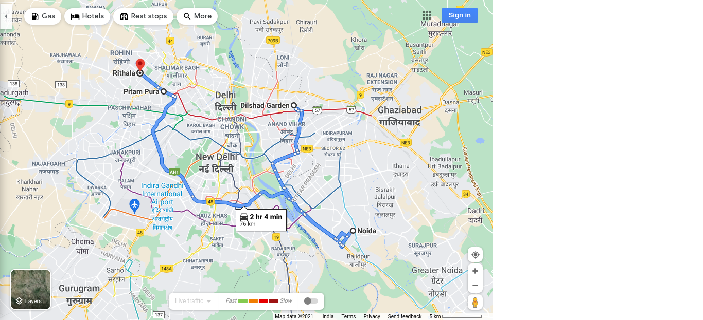

Route : Via Noida-Greater Noida Expy
ETA - 2 hr 4 min typically
Distance - 76.0 km
 Summary : 2 hr 4 min without traffic
- Head southeast on GTB Rd toward Rd Number 64/Tahirpur Rd
600 m
Pass by Dr Sushma Jindal Hospital, IVF, Intrauterine Insemination of semen, Minimal Access Surgery Centre (on the left in 500 m)
- Turn left
450 m
Pass by Gurudwara Bebe Nanaki Ji (on the right)
- Turn left onto GT Karnal Rd/GT Road
46 m
- Slight left
400 m
Pass by the petrol pump (on the left in 350 m)
- At Apsara Border Chowk, take the 3rd exit onto Chaudhary Charan Singh Marg/Ghazipur Rd
5.4 km
Continue to follow Chaudhary Charan Singh Marg
- Continue onto Ghazipur Rd
7 m
- Turn left onto the ramp
300 m
- At the roundabout, take the 3rd exit
550 m
- Slight left onto Gurjar Samrat Mihir Bhoj Marg
3.2 km
- Take the ramp onto Noida Link Rd/Pramukh Swami Maharaj Marg
950 m
- Keep right to stay on Noida Link Rd/Pramukh Swami Maharaj Marg
1.3 km
Continue to follow Pramukh Swami Maharaj Marg
- Keep right to continue on Mayur Vihar Flyover
1.3 km
Pass by Fit N Furious Diet Clinic (on the left in 1.1 km)
- Continue onto Dadri Road
170 m
- Continue onto Dadri Main Rd
3.7 km
Pass by Hindon Regulator (on the left)
- Continue onto Noida-Greater Noida Expy
500 m
- Use the right 3 lanes to stay on Noida-Greater Noida Expy
48 m
- Keep right to stay on Noida-Greater Noida Expy
5.2 km
- Take the exit toward Fortune School Rd
230 m
- Turn left onto Fortune School Rd
2.0 km
Pass by IGL 105 CNG Filling Station Noida (on the left)
- Use any lane to turn left onto Gejha Rd/Vishwakarma Rd
1.1 km
Continue to follow Vishwakarma Rd
- Get on Noida-Greater Noida Expy in Sultanpur from Vishwakarma Rd and सरदार वल्लभ भाई पटेल मार्ग
9 min (4.5 km)
- Head southwest on Vishwakarma Rd toward कर्नल कृष्ण बाल कपूर मार्ग
300 m
Pass by wonderland institute of robotics (on the left)
- Continue straight past Sachin Vegetable , Fruits and general store to stay on Vishwakarma Rd
2.1 km
Pass by Tikona Home Broadband (on the left)
- Use the left lane to take the ramp to सरदार वल्लभ भाई पटेल मार्ग
550 m
- Use any lane to turn left at Jypee onto सरदार वल्लभ भाई पटेल मार्ग
600 m
- Turn left onto the ramp
800 m
Pass by SBM Toilet (on the left in 400 m)
- Turn right toward Noida-Greater Noida Expy
29 m
- Turn left to merge with Noida-Greater Noida Expy
52 m
- Continue on Noida-Greater Noida Expy. Drive from Mahatma Gandhi Marg/Ring Rd to Block C5, Delhi
54 min (38.6 km)
- Merge with Noida-Greater Noida Expy
5.0 km
- Keep right to stay on Noida-Greater Noida Expy
2.5 km
- Use the left 2 lanes to take the exit toward Delhi Noida Direct Flyway
600 m
- Continue onto Delhi Noida Direct Flyway
4.5 km
- Continue onto Mahatma Gandhi Marg/Ring Rd/NH 44
9.7 km
Continue to follow Mahatma Gandhi Marg/Ring Rd
- Keep right to continue on Mahatma Gandhi Marg/Ring Rd/NH 48
16.3 km
Continue to follow Mahatma Gandhi Marg/Ring Rd
- Drive to Lala Jagat Narayan Marg in Pitam Pura
4 min (1.7 km)
- Continue onto Lala Jagat Narayan Marg
1.4 km
- Head southeast on Lala Jagat Narayan Marg toward Vaishali Rd
1.0 km
- Continue onto Bhagawan Mahavir Marg
3.0 km
Pass by Metro Pillar Number 378 (on the right)